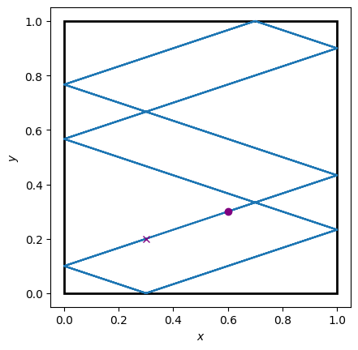

Генераторы событий#
В языке Python есть мощная концепция под названием итерируемый объект - это любой объект (класс), который реализует протокол итератора. О протоколе итератора подробно рассказано здесь и на хабре. Здесь рассмотрим данный протокол минимально, но достаточно. Это необходимо для понимания концепции функции-генератора в Python.
Протокол итератора#
Посмотрим, как устроен протокол итератора “на пальцах”.
Список, кортеж, словарь, множество и генератор - примеры итерируемых объектов в Python.
Пусть есть список a:
a = [1, 'a', None, False, -3.5]
Когда мы желаем пройтись по списку (другими словами, хотим итерировать список), то пишем что-то в таком духе:
for ai in a:
print(ai)
1
a
None
False
-3.5
Ровно то же самое можно получить с помощью явного итератора списка:
# Создаём итератор по списку a
a_iter = iter(a)
# И итерируем вручную с помощью встроенной функции next
print(next(a_iter))
1
print(next(a_iter))
a
И так далее до последнего элемента.
Но что случится, если мы, дойдя до конца итерируемой коллекции (итератора), вновь применим функцию next(...)?
Случится исключение StopIteration.
Собственно, так и работает цикл for.
Можно переписать его через цикл while:
a_iter = iter(a)
while True:
try:
print(next(a_iter))
except StopIteration:
break
1
a
None
False
-3.5
Получен ровно тот же результат.
С помощью итераторов возможно создание собственных (пользовательских) классов, поддерживающих протокол итератора, путём описания методов __iter__(self) (возвращает итератор для объекта) и __next__(self) (возвращает элемент коллекции).
Генераторы#
Как уже было отмечено, среди итерируемых сущностей в Python существуют так называемые генераторы.
Что они собой представляют?
Это обычная Python-функция с единственной особенностью - в её теле есть один или несколько операторов yield.
Вот пример:
def count(start, stop, step):
"""Генератор, выдающий числа по порядку
от 0 до бесконечности.
"""
counter = start
while counter <= stop:
yield counter
counter += step
Это функция, создающая генератор с помощью оператора yield.
# Создание генератора
count_gen = count(start=1, stop=5, step=1)
# Генерация чисел
for x in count_gen:
print(x)
1
2
3
4
5
Можно то же самое записать более лаконично:
for x in count(1, 5, 1):
print(x)
1
2
3
4
5
По аналогичной схеме действуют такие встроенные и часто применяемые функции, как range(...), enumerate(...), zip(...) и другие (особенно из пакета itertools).
Механику генератора упрощённо можно выразить следующим образом:
Вызывается функция, создающая генератор. Будем рассматривать в качестве примера
count(...).Функция выполняется до первого оператора
yield, после чего возвращает управление и объект генератора вызвавшему её коду.Каждый раз, когда к генератору применяется функция
next(...), генерируется значение, указанное у оператораyield. В данном случаеyield counterбудет возвращать текущее значение счётчика.После этого выполняется тело функции после оператора
yield(если оно есть, в ином случае по умолчанию срабатываетreturn None). Именно поэтому вcount(...)бесконечный цикл не выполняется непрерывно.
Два главных преимущества генераторов обусловлены экономией памяти и естественным механизмом сохранения внутреннего состояния генератором.
Последнее означает, что все аргументы и локальные переменные порождающей функции сохраняются внутри генератора, пока он активный (действующий).
Генератор перестаёт быть активным, если из него осуществляется выход оператором return <value>.
Генератор от функции отличается только поддержкой протокола итератора.
В остальном он ведёт себя, как любая Python-функция.
И всё это именно то, что нам нужно, чтобы облегчить написание кода дискретно-событийных моделей!
Процессы как генераторы событий#
Раз генераторы могут сохранять свои локальные переменные и параметры, заданные при их создании, то отпадает необходимость в явном указании действии при инициализации событий.
Теперь действие - это всё то, что находится после оператора yield в теле функции процесса, ведь код после yield выполняется, когда к генератору применяется функция next(...), что происходит в основном цикле моделирования при наступлении события.
Далее на примере кода смысл написанного прояснится.
Наш класс события Timeout приобретает совсем простую форму:
from dataclasses import dataclass
@dataclass(order=True, frozen=True)
class Timeout:
when: float
В нём теперь нет поля actions, хранящего список кортежей пар (функция, аргументы).
Функции расчёта столкновений шарика со стенками calc_delay(...) и обновления его параметров и траектории update(...) нисколько не изменились.
А вот как теперь выглядит процесс движения шарика:
def ball_motion(env, bounds, r, v, traj):
"""Генератор событий столкновения шарика
со стенками.
"""
while True:
dt, signs = calc_delay(bounds, r, v)
yield env.timeout(dt)
# Действия
# (избавились от отдельной функции update)
r += v * dt
v *= signs
traj.append((env.now, *r))
Также отличие есть в методе env.timeout(...).
Теперь ему не нужно передавать список действий с аргументами.
Это упрощает сопровождение программы (поиск ошибок, добавление чего-либо нового в модель и т.д.) и делает код более читаемым и выразительным.
Также из нового можно отметить использование бесконечного цикла while True, что, как мы уже знаем, для генератора означает лишь, что он будет работать (генерировать) столько, сколько нам потребуется.
Это то, к чему ранее приводило указание функции того же самого процесса в списке действий.
Как же теперь запишется основной цикл ДСМ?
Основной цикл моделирования#
Разберёмся, что изменилось в среде моделирования.
Набор полей и методов не изменился, но теперь методы process(...) и run(...) работают не с функциями, а с генераторами посредством итераторов.
Вот как теперь выглядит класс среды моделирования:
from queue import PriorityQueue
class Environment:
"""Класс среды дискретно-событийного моделирования.
"""
# Инициализатор остался тем же самым
def __init__(self):
self.now = 0
self.processes = []
self.events = PriorityQueue()
# В список процессов добавляем не просто
# генератор, а его итератор
def process(self, proc):
"""Инициализация процесса.
Здесь proc - это генератор событий.
"""
self.processes.append(iter(proc))
# timeout стал чуть проще
# из-за меньшего числа аргументов
def timeout(self, delay):
"""Создание события Timeout.
"""
self.events.put(Timeout(self.now + delay))
# Цикл моделирования претерпел изменения,
# связанные с работой с генераторами
def run(self, until):
"""Основной цикл моделирования.
"""
while True:
# Генерация событий теперь происходит,
# когда к итераторам процессов применяется
# функция next
for proc in self.processes:
try:
next(proc)
# После этого будет выполнен код
# в proc после yield, т.е. будут
# выполнены все действия
except StopIteration:
# Это значит, что процесс
# (генератор) закончился, поэтому
# его стоит убрать из списка
self.processes.remove(proc)
# Далее всё то же, что и было, кроме того,
# что теперь нет нужды запускать функции
# действий напрямую
if self.events.empty():
break
event = self.events.get()
if event.when > until:
break
self.now = event.when
Основное отличие, как можно заметить, состоит в работе с итераторами генераторов событий, а не напрямую с функциями процессов и действий.
Здесь важно понимать, как работает связка генератор-итератор-next.
Сначала в run(...) посредством next(...) делается попытка запустить все заданные процессы (iter процессы не запускает, а лишь создаёт итератор).
Если процесс завершён (возникло исключение StopIteration), то этот процесс удаляется из списка процессов.
Цикл for продолжается.
В противном случае над итератором процесса выполняется функция next(...), в результате чего поток управления Python возвращается в функцию-генератор в то место, где расположен оператор yield.
Выполняется весь дальнейший код функции до следующей встречи с yield.
В случае процесса ball_motion(...) выполнится действие update(...), начнётся следующая итерация бесконечного цикла, вызовется функция calc_delay(...) и снова функция упрётся в оператор yield, вернув управление вызвавшему коду (методу run(...)).
Теперь посмотрим, как инициализировать и запустить моделирование.
Моделирование#
Условие задачи то же, что было ранее:
box_xy, box_w, box_h = (0, 0), 1, 1
bounds = (box_xy[0], box_w), (box_xy[1], box_h)
r = np.array((0.6, 0.3))
v = np.array((0.3, 0.1))
until = 59
Запуск моделирования выглядит похоже, но имеет одну важную особенность:
env = Environment()
traj = [(env.now, *r)]
# Особенность в том, что в метод process передаётся
# не имя функции, а генератор, который создаётся
# при вызове функции-генератора
env.process(ball_motion(env, bounds, r, v, traj))
env.run(until)
Функция-генератор ball_motion(...) возвращает объект генератора, хранящий все переданные этой функции параметры.
Обработка результатов нисколько не меняется. В итоге получается ровно то же самое решение, что и во всех предыдущих разделах.
На этом, пожалуй, закончим рассматривать основы программной реализации ДСМ. Намеченная цель - разобраться с основами ДСМ и программно реализовать алгоритм ДСМ - достигнута. Теперь вы знаете и теорию ДСМ, и то, как его можно реализовать на практике.
Не забывайте, что Python является ходовым инструментом у учёных и инженеров из самых разных областей, поэтому неудивительно, что имеется готовый мощный инструмент для ДСМ. Называется он SimPy (существуют и другие решения). Конечно, не стоит изобретать собственный велосипед. В данной главе алгоритм ДСМ реализовывался с нуля исключительно в учебных целях, чтобы вы увидели, что никакой магии нет ни в самом ДСМ, нет её и внутри SimPy.
Далее перейдём к рассмотрению библиотеки SimPy, основанной на генераторах событий. К концепции SimPy мы максимально приблизились, так что освоение этой библиотеки не вызовет у вас трудностей. На примере SimPy узнаем, какие ещё фантастические твари обитают в дискретно-событийном мире.
Исходный код#
Show code cell content
import matplotlib.pyplot as plt
import numpy as np
from dataclasses import dataclass
from matplotlib.patches import Rectangle
from typing import Union
from queue import PriorityQueue
@dataclass(order=True, frozen=True)
class Timeout:
when: Union[int, float]
class Environment:
def __init__(self):
self.now = 0
self.processes = []
self.events = PriorityQueue()
def process(self, proc):
self.processes.append(iter(proc))
def timeout(self, delay):
self.events.put(Timeout(env.now + delay))
def run(self, until):
while True:
for proc in self.processes:
try:
next(proc)
except StopIteration:
self.processes.remove(proc)
if self.events.empty():
break
event = self.events.get()
if event.when > until:
break
self.now = event.when
def ball_motion(env: Environment, bounds, r, v, traj):
while True:
dt, signs = calc_delay(bounds, r, v)
yield env.timeout(dt)
update(env, dt, signs, traj, r, v)
def calc_delay(bounds, r, v):
# Распакуем аргументы для удобства
(x_lb, x_rb), (y_bb, y_tb) = bounds
x, y = r
vx, vy = v
# Вычисляем время (задержку):
dtx, dty = 0., 0.
# - в направлении оси Ox
if vx > 0:
dtx = (x_rb - x) / vx
elif vx < 0:
dtx = (x_lb - x) / vx
# - в направление оси Oy
if vy > 0:
dty = (y_tb - y) / vy
elif vy < 0:
dty = (y_bb - y) / vy
# Определяем, какую проекцию скорости инвертировать
signs = [1, 1]
signs[np.argmin((dtx, dty))] = -1
return min(dtx, dty), signs
def update(env: Environment, dt, signs, traj, r, v):
r += v * dt
v *= signs
traj.append((env.now, *r))
def plot_traj(traj, figax=None, **kw):
if figax is None:
fig, ax = plt.subplots()
else:
fig, ax = figax
# Линии траектории
ax.plot(traj[:, 1], traj[:, 2], **kw)
# Начальная и конечная точки
ax.plot(traj[0, 1], traj[0, 2],
ls="", marker="o", c="purple")
ax.plot(traj[-1, 1], traj[-1, 2],
ls="", marker="x", c="purple")
return fig, ax
# Условия задачи
box_xy, box_w, box_h = (0, 0), 1, 1
bounds = (box_xy[0], box_w), (box_xy[1], box_h)
r = np.array((0.6, 0.3))
v = np.array((0.3, 0.1))
until = 59
# Решение
env = Environment()
traj = [(env.now, *r)]
env.process(ball_motion(env, bounds, r, v, traj))
env.run(until)
# Сохраняем конечную точку траектории
r += v*(until - traj[-1][0])
traj.append((env.now, *r))
traj = np.array(traj)
# Графики
fig, ax = plot_traj(traj)
bounds_rect = Rectangle(
box_xy, box_w, box_h,
facecolor="none", edgecolor="k", lw=2
)
ax.add_patch(bounds_rect)
ax.set(xlabel="$x$", ylabel="$y$", aspect="equal")
print("Число столкновений:", traj.shape[0] - 1)
plt.show()
Число столкновений: 25
